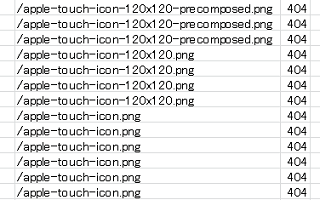
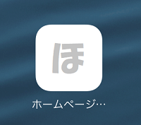
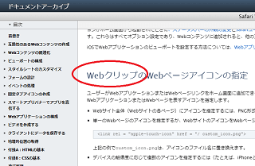
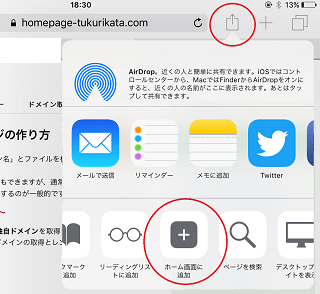
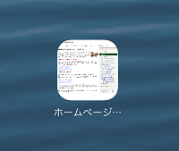
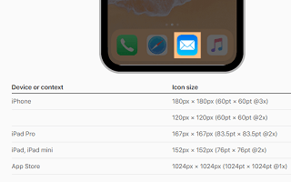
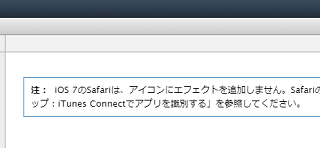
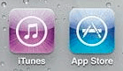
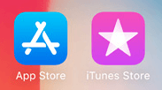

apple-touch-icon.pngの作り方
サーバーのアクセスログを確認すると「apple-touch-icon.png」で404エラーが多発していることが多いと思います。

この「apple-touch-icon.png」はWebクリップなどと呼ばれているアイコンのことですが、この画像を設定しておくことでiOSでのサイトへのリンクを「ホーム画面に追加」できるようになります。
例えば、当サイトのiPadでのWebクリップはこちらになります。

Appleのこちらのページに詳細な記載がありますが、概ね、Webクリップはアプリのアイコン画像のようなものと考えてよいかと思います。

また、このページには以下のようにも記載されています。
「リンク要素を使用してアイコンが指定されていない場合は、Webサイトのルートディレクトリでapple-touch-icon...プレフィックスが付いたアイコンが検索されます。」
つまり、<head>タグ内のリンク要素で「apple-touch-icon.png」が指定されてない場合、ルートディレクトリに探しに行くため、この画像を何も設定していない場合は上記のような「404エラー」が大量に発生することになるわけです。
そのため、このapple-touch-icon.pngの404エラーを回避するためにも、適当なアイコン画像を作成してルートディレクトリに設置しておくとよいでしょう。
ホーム画面に追加の「Webクリップ」とは？
この「Webクリップ」についてですが、iPadのSafariのブラウザを例にすると以下の箇所に「ホーム画面に追加」があります。

こちらをタップすると、「apple-touch-icon.png」を何も設定していないデフォルトの状態ではホームページのキャプチャー画像がWebクリップとして表示されます。

一方、「apple-touch-icon.png」を作成してWebクリップの画像を設定した場合、このようなスタイリッシュなアイコンで表示されることになります。
ただし、このようなアイコンは主にアプリ関係で追加する人が多いため、あえて個人サイトへのリンクをWebクリップとして追加するケースはあまりないかもしれません。そのため、この「apple-touch-icon.png」については、なしで済ませているサイトも多いです。
とはいえ、設置していないと上記のように「404エラー」が大量に発生することになるため、適当なアイコンを作成してルートディレクトリに設置しておくことをおすすめします。
「apple-touch-icon.png」のサイズは何px？
上記の404エラーのログのように「120x120」などと大きさが表示されていることがありますが、そのようなエラーログについては、そのまま「120x120」の大きさでアイコンを作成してしまうとよいでしょう。
一方、大きさの記載のない「apple-touch-icon.png」については任意になりますが、こちらのページが参考になるかと思います。

iPhone 180px × 180px (60pt × 60pt @3x)
120px × 120px (60pt × 60pt @2x)
iPad Pro 167px × 167px (83.5pt × 83.5pt @2x)
iPad, iPad mini 152px × 152px (76pt × 76pt @2x)
App Store 1024px × 1024px (1024pt × 1024pt @1x)
解像度が高いデバイスの場合は「@3x」となっているため、同じ「60pt × 60pt」でも3倍の画像の大きさが必要で「180px × 180px」となり、「@2x」なら2倍で「120px × 120px」という意味になります。ちなみに、このpt（ポイント）というのは長さの単位のことです。
一般サイトが「App Store」で表示されることはまずないため、それ以外で一番大きな「180px × 180px」を設定しておくことをおすすめします。デバイスの推奨サイズに一致するアイコンがない場合でも、推奨サイズよりも大きく、かつ最小のアイコンが自動的に使用されることになります。
当サイトでは「apple-touch-icon.png」を「180px × 180px」で作成していますが、上記のように「152px × 152px」のiPadで表示させた場合でも問題なく表示されています。
■当サイトの実際の「apple-touch-icon.png」
大手メディアを確認してみますと、朝日新聞は「144×144」、読売は「152×152」、NHKは「57×57」、西日本新聞は「180×180」、楽天は「192×192」などとかなりマチマチでした。
そのほか、404エラーのログを確認しつつ、「120x120」などの画像も用意しておけばよいでしょう。ペイントなどで「180px × 180px」を一つ作成して、それをリサイズさせればよいだけなため、それほど手間はかからないかと思います。もし面倒な場合はOGP画像をそのままリサイズするのでもよいかと思います。
また、作成後は画像を圧縮するなどして、できるだけファイル容量を小さくしておくことをおすすめします。
「-precomposed.png」でエフェクトを無効化
アクセスログを確認すると「apple-touch-icon-precomposed.png」もあるかと思いますが、この「-precomposed.png」についてはヘルプページに以下のような記載があります。

「iOS 7のSafariは、アイコンにエフェクトを追加しません。Safariの古いバージョンでは、-precomposed.png接尾辞が付いた名前のアイコンファイルに効果が追加されません。」
これはエフェクト効果の事かと思いますが、古いバージョンのiOSでは以下のように光ったようなエフェクト効果が自動で追加されるため、自分でエフェクトをかけたアイコンを使用する場合は二重にかかってしまうことになります。

そのため、重複してエフェクトをかけたくない場合、「-precomposed.png」を付ければ効果が追加されるのを回避することができます。
ただし、「iOS 7のSafariは、アイコンにエフェクトを追加しません。」とあり、現在のバージョンでもこのエフェクトは追加されなくなっているはずです。

そのため、現在ではどのような意味があるのかは不明ですが、当サイト運営者は「apple-touch-icon.png」と全く同じものを「apple-touch-icon-precomposed.png」でも設定しておきました。これで404エラーを回避できるはずです。
apple-touch-icon.pngの設定方法
実際の設定方法についてですが、以下のようになります。
①サイト全体（サイトの各個別ページ）にアイコンを指定
→ apple-touch-icon.pngをルートディレクトリに配置するだけ。
②単一の個別ページにアイコンを指定
→ 以下のリンク要素を該当ページに追加する
<link rel="apple-touch-icon" href="/custom_icon.png">
③デバイスの解像度に応じて複数を指定
→ 以下のリンク要素を該当ページに指定する
<link rel="apple-touch-icon" href="touch-icon-iphone.png">
<link rel="apple-touch-icon" sizes="152x152" href="touch-icon-ipad.png">
<link rel="apple-touch-icon" sizes="180x180" href="touch-icon-iphone-retina.png">
<link rel="apple-touch-icon" sizes="167x167" href="touch-icon-ipad-retina.png">
ページごとに個別に指定する必要はないかと思いますので、②のリンク要素を使用する必要性はあまり感じられませんが、大手メディアなどはリンク要素で記載しているところもあります。
当サイトにつきましては、①のルートディレクトリにだけ設定しており、個別ページのリンク要素には指定していません。個人サイトの場合はホーム画面に追加されるケースはあまりないかと思いますので、ルートディレクトリに設定しておけば十分ではないかと感じています。